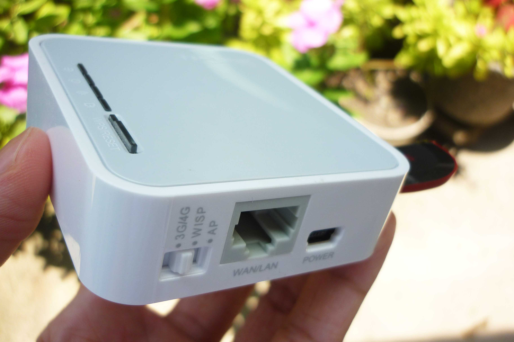
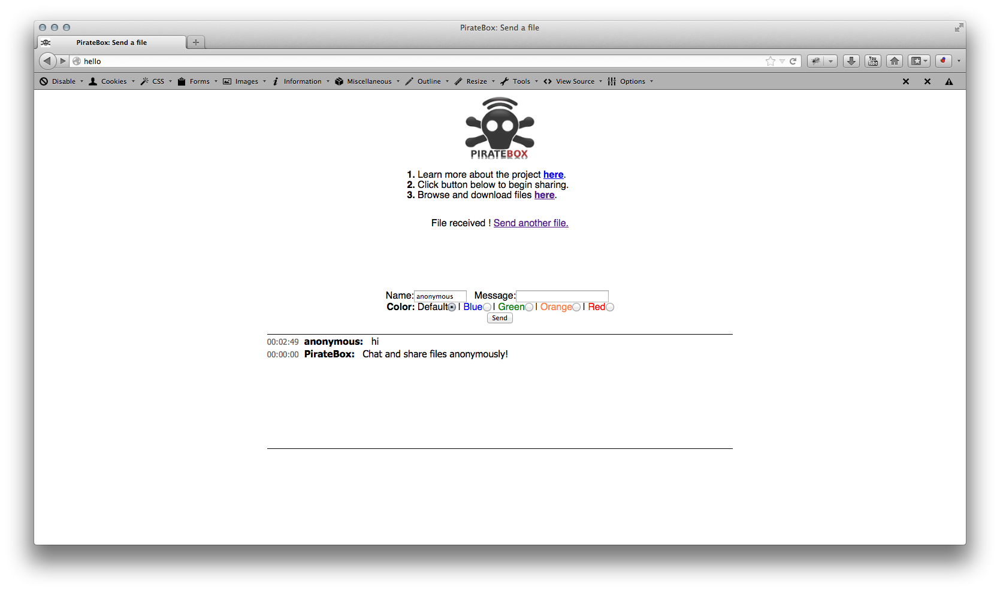

There’s always some romantic appeal to anonymity, the idea that you could access a free, open network and perhaps leave a message without leaving a trace, a note, a piece of music you think is worth sharing.
With the ever increasing threats to online security, governments spying on ordinary citizens, the fascination with alternative forms of communication couldn’t be more timely, gratifying even.
“Big Brother is Watching you.”
-George Orwell
One day I was browsing through the web when I ran across the following YouTube video that addresses this very specific need for anonymous collaboration.
The PirateBox
Our PirateBox machine would only consist of a very inexpensive wireless router from TP-Link, MR-3020 which you can get at Newegg for about $40, along with a USB Flash drive for storage, I happened to have one lying around the house, a Sandisk Cruzer Blade.
Installation
Loading PirateBox onto the TP-Link router is pretty much straightforward. The installation process generally involves the following steps.
a. Flash OpenWRT firmware within the Router’s default upgrade firmware tool.
b. Install PirateBox packages on top of OpenWRT.
I have successfully installed PirateBox thanks to the guy who’s posted the following link.

After we’ve successfully installed PirateBox and restarted the router, it can now be accessed as an open wireless network, ready to be visited by any person with a wireless device nearby.

Impressions
And so I’ve connected, posted some messages on the built-in Chat Client, uploaded a couple of files, it felt strangely fulfilling. Then I waited if anyone would reply… No one did.
Are you also fascinated with anonymity, perhaps would also be interested to set up your own PirateBox? Or have you already done so? I would love that you share your thoughts below.